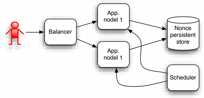

Clustered deployment structure of OpenID relying part:
In most cases is scheduler in both nodes.
On Relaying party side have to be created new form for entering user'd identifiers. According to OpenId specification form field where user should enter his OpenID identification string should be called "openid_identifier". Then just "Submit" button is required. After submitting user's identification should be passed to relaying party verification process.
As was mentioned nonces are unique string that verify that authentication was used just one time. When nonce come for first time to RP than is stored. Next time when it come whole message is rejected. Simply says it's just place where are nonces stored for some limited time (usually 30 minutes). When you run you application as single node that you can store nonces in memory. This approach allows use nonces more that once when your application is restarted. In that case you can use bundled in memory nonce store. You should consider if this security vulnerability is acceptable for your application.
When you run application with more that one node or you don't want accept risk of reusing nonce after application restart that you have to consider your persistent nonce store. You can create your own nonce store by implementing com.coroptis.coidi.rp.services.NonceDao interface from rp library.
When you expect big load of uses and authentication requests than you should take care of removing of old nonces.
Nonce store could be implemented with any technology, for example:
Coidi doesn't provide concrete implementation, because each application have it's special requirements for drivers, library that can't by fulfilled by coidi library.
When is used some kind of persistent store for nonces than this nonces after some time become stale. Stale nonces could be removed. Process of removing staled nonces could be run periodically by some scheduler. Scheduler should be part of production application. Coidi library scheduler doesn't support because scheduler is usually part of application server